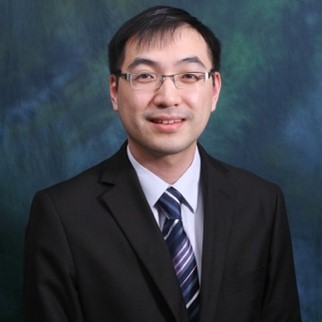

Invited Lectures
| Prof. Moti YungDr. Allen AuDr. Kaitai Liang |
 |
| Prof. Moti Yung Snapchat Inc. & Columbia University, USA |
| BIO: Moti Yung is a Security and Privacy Scientist with Google, with main interests in Cryptography, Security, and Privacy. He graduated from Columbia University in 1988 and is an adjunct senior research faculty at Columbia till today. In parallel to Columbia he has had an industrial research career, working at places like IBM, RSA Labs. (EMC), Snap, and now Google. Yung is a fellow of ACM, of IEEE, of the International Association for Cryptologic Research (IACR) and the European Association for Theoretical Computer Science (EATCS). Among his awards are ACM's SIGSAC Outstanding Innovation Award in 2014, and 2018 IEEE Computer Society W. Wallace McDowell Award. His research covers broad areas: from the theory and foundations, to applied systems, and actual engineering efforts of cryptography, privacy, and secure systems. |
| Title: Methodology for Secure Systems Deployment: Science of Security for Evolving Ecosystems. |
| Abstract: The goal of science of security is to understand better and contribute to the design and the effectiveness of actual secure systems. In this talk I will raise a few basic issues: -To be successful, Sci Sec needs to cover deployment methodologies to understand the full life cycle of security systems and components; -The interaction with general engineering needs to be adapted to methodologies that assure success of security systems; and -I will stress the notions of flexibility and proactive nature of deployment that assure extended role of a system I will use actual deployment of the ADX system for demonstrating my points. |
|  |
| Dr. Allen Au Hong Kong Polytechnic University, China |
| BIO: Dr Man Ho Allen Au is a Full Professor at the Department of Computing of The Hong Kong Polytechnic University. Before that, he was an Associate Professor in the Department of Computer Science at the University of Hong Kong. Allen's research interests include Information Security, Applied Cryptography, Blockchain Technology, and their applications. He has published over 200 refereed papers in top journals and conferences, including CRYPTO, ASIACRYPT, CCS, NDSS, S&P, SIGMOD, SOSP, IEEE TIFS, TDSC, etc. He is a recipient of the 2009 PET runner-up award for outstanding research in privacy-enhancing technologies. His team win the Plonk-DIZK GPU Acceleration - Open Division of ZPRIZE 2022 competition with over half million US dollar’s cash award. He has served as PC/general co-chair of a number of international conferences, including ACM ASIACCS, RAID, SECURECOM, ISPEC, PROVSEC, etc. He is currently an associate editor of IEEE Transactions on Dependable and Secure Computing, Journal of Information Security and Applications, and an editorial board member of Journal of Cryptologic Research. |
| Title: The Role of Cryptography in Blockchains. |
| Abstract: Conceptualized 12 years ago as a core component of Bitcoin, blockchain has gained a vast amount of interest. Informally speaking, a blockchain is a distributed, shared, and immutable ledger that maintains a growing list of ordered records. It became extremely popular among the industries in the last few years. Many companies are exploring applications of blockchain beyond cryptocurrencies. In this talk, the speaker will discuss the role of cryptography in blockchains, and how it contribute to the security and privacy of blockchain and its various applications. He will also highlight some of the latest development in this area. Topics covered include various cryptographic tools useful for security and privacy in blockchains, the need for appropriate security models, and statistical attacks on transaction privacy. Finally, we will conclude the talk with challenges related to the adoption of blockchain technologies and insights developed from our experience. |
 |
| Dr. Liang Delft University of Technology |
| BIO: Dr. Liang is a tenured faculty member of the Cybersecurity group at Delft University of Technology. He received his PhD degree at City University of Hong Kong. He worked as a post-doctoral researcher at Aalto University and held a permanent assistant professor position in secure systems at the University of Surrey. With over 10 years experiences on cybersecurity R&D, his main focus is on the design and implementation of cryptographic protocols to security. He has led as a PI in several European funded projects and delivered real-world impact via these projects with academic and industrial partners. He has also maintained a tight research relationship with Europe, Asia-pacific and northern America academic communities. He has published a series of research works, applying information security and crypto tools to address cybersecurity challenges. These publications have appeared in high-tier international information security journals and A* conferences, e.g., USENIX Security, NDSS, ESORICS (Best Research Paper Award), IEEE TIFS, and IEEE TDSC. Beyond his research contributions, Dr. Liang has played an active role in the academic community. He has served as a Technical Program Committee (TPC) member, General Chair, and Steering Committee member for over 25 renowned international security and privacy conferences, including IEEE Euro S&P, ESORICS, IEEE CSF, and PoPETs. Furthermore, he has made valuable contributions to ISO standards as a member of the standards committee 381027 "Cybersecurity & Privacy" at NEN. In addition to his academic pursuits, Dr. Liang serves as an Associate Editor for esteemed journals such as the Computer Journal, IEEE Systems Journal, and the EURASIP Journal on Information Security. Furthermore, he acts as a cybersecurity consultant for SMEs, sharing his expertise and guidance in the field. |
| Title: Searchable Symmetric Encryption and its attacks |
| Abstract: Searchable Symmetric Encryption (SSE) is a secure tool that enables users to delegate keyword searches over encrypted databases to an honest but curious server, while preserving the privacy of the keywords and the encrypted documents. In this talk, we will begin by introducing the concepts, mechanisms, and security notions related to SSE. We will then discuss current attacks on SSE and highlight some of the open problems in this area. |